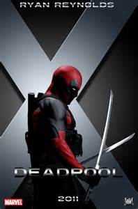

電影介紹
- 導演:Tim Miller
- 卡司:萊恩雷諾斯(Ryan Reynolds)-「死侍」韋德威爾遜
吉娜卡拉諾(Gina Carano)-「沙塵天使」克莉絲汀娜
Christina Angel Dust
TJ米勒(T.J. Miller)-「黃鼠狼」傑克·漢默
Jack Hammer Weasel
艾德斯克林(Ed Skrein)-「阿賈克斯」法蘭西斯費里曼
Francis Freeman Ajax
莫蓮娜芭卡琳(Morena Baccarin)-凡妮莎 傑拉爾丁 卡萊爾
Vanessa Geraldine Carlysle
- 上映日期:20160205
- 片長:106分鐘
- 詼諧搞笑★★★★☆(4.3)
- 劇情張力★★★☆☆(3.8)
- 整體滿意度★★★★☆(4.0)
預告片